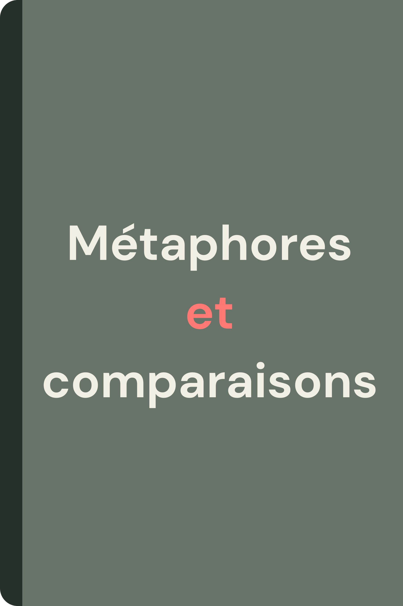

Cette ressource permet d’apprendre à distinguer une métaphore d’une comparaison. Les exercices proposent, pour chaque série, trois courts textes : l’un contient une métaphore, un autre une comparaison et le troisième aucune des deux. La présence du mot « comme » ne suffit pas à identifier une comparaison : certains textes l’utilisent volontairement sans établir de rapprochement. Un mémo accompagne les exercices et peut être refait à la maison avec de nouveaux exemples pour préparer l’évaluation.